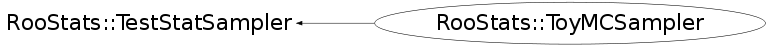

class RooStats::ToyMCSampler: public RooStats::TestStatSampler
Function Members (Methods)
public:
protected:
| void | ClearCache() |
| RooAbsData* | Generate(RooAbsPdf& pdf, RooArgSet& observables, const RooDataSet* protoData = NULL, int forceEvents = 0) const |
Data Members
protected:
| RooArgSet* | _allVars | ! |
| RooAbsPdf::GenSpec* | _gs1 | ! GenSpec #1 |
| RooAbsPdf::GenSpec* | _gs2 | ! GenSpec #2 |
| RooAbsPdf::GenSpec* | _gs3 | ! GenSpec #3 |
| RooAbsPdf::GenSpec* | _gs4 | ! GenSpec #4 |
| list<RooAbsPdf::GenSpec*> | _gsList | ! |
| list<RooArgSet*> | _obsList | ! |
| list<RooAbsPdf*> | _pdfList | ! |
| Double_t | fAdaptiveHighLimit | |
| Double_t | fAdaptiveLowLimit | |
| Bool_t | fExpectedNuisancePar | whether to use expectation values for nuisance parameters (ie Asimov data set) |
| Bool_t | fGenerateAutoBinned | |
| Bool_t | fGenerateBinned | |
| TString | fGenerateBinnedTag | |
| const RooArgSet* | fGlobalObservables | |
| RooAbsPdf* | fImportanceDensity | in dev |
| const RooArgSet* | fImportanceSnapshot | in dev |
| Double_t | fMaxToys | |
| Int_t | fNEvents | number of events per toy (may be ignored depending on settings) |
| Int_t | fNToys | number of toys to generate |
| RooStats::NuisanceParametersSampler* | fNuisanceParametersSampler | ! |
| const RooArgSet* | fNuisancePars | |
| RooArgSet* | fNullPOI | parameters of interest |
| const RooArgSet* | fObservables | |
| RooAbsPdf* | fPdf | model |
| RooAbsPdf* | fPriorNuisance | prior pdf for nuisance parameters |
| RooStats::ProofConfig* | fProofConfig | ! |
| const RooDataSet* | fProtoData | in dev |
| string | fSamplingDistName | name of the model |
| Double_t | fSize | |
| RooStats::TestStatistic* | fTestStat | test statistic that is being sampled |
| Double_t | fToysInTails | |
| Bool_t | fUseMultiGen | Use PrepareMultiGen? |
| static Bool_t | fgAlwaysUseMultiGen | Use PrepareMultiGen always |
Class Charts
{kind=link}
{kind=link}
{kind=link}
{kind=link}

Function documentation
Bool_t CheckConfig(void)
only checks, no guessing/determination (do this in calculators, e.g. using ModelConfig::GuessObsAndNuisance(...))
SamplingDistribution* GetSamplingDistribution(RooArgSet& paramPoint)
Use for serial and parallel runs.
SamplingDistribution* GetSamplingDistributionSingleWorker(RooArgSet& paramPoint)
This is the main function for serial runs. It is called automatically from inside GetSamplingDistribution when no ProofConfig is given. You should not call this function yourself. This function should be used by ToyMCStudy on the workers (ie. when you explicitly want a serial run although ProofConfig is present).
void GenerateGlobalObservables() const
RooAbsData* GenerateToyData(RooArgSet& paramPoint, double& weight) const
This method generates a toy data set for the given parameter point taking global observables into account. The values of the generated global observables remain in the pdf's variables. They have to have those values for the subsequent evaluation of the test statistics.
RooAbsData* GenerateToyDataImportanceSampling(RooArgSet& paramPoint, double& weight) const
This method generates a toy data set for importance sampling for the given parameter point taking global observables into account. The values of the generated global observables remain in the pdf's variables. They have to have those values for the subsequent evaluation of the test statistics.
RooAbsData* Generate(RooAbsPdf& pdf, RooArgSet& observables, const RooDataSet* protoData = NULL, int forceEvents = 0) const
This is the generate function to use in the context of the ToyMCSampler instead of the standard RooAbsPdf::generate(...). It takes into account whether the number of events is given explicitly or whether it should use the expected number of events. It also takes into account the option to generate a binned data set (ie RooDataHist).
void ClearCache()
clear the cache obtained from the pdf used for speeding the toy and global observables generation needs to be called every time the model pdf (fPdf) changes
ToyMCSampler(RooStats::TestStatistic& ts, Int_t ntoys)
SamplingDistribution* AppendSamplingDistribution(RooArgSet& allParameters, RooStats::SamplingDistribution* last, Int_t additionalMC)
Extended interface to append to sampling distribution more samples
Double_t EvaluateTestStatistic(RooAbsData& data, RooArgSet& nullPOI)
Main interface to evaluate the test statistic on a dataset
void SetNEventsPerToy(const Int_t nevents)
Forces n events even for extended PDFs. Set NEvents=0 to use the Poisson distributed events from the extended PDF.
void SetParametersForTestStat(const RooArgSet& nullpoi)
specify the values of parameters used when evaluating test statistic
void SetPdf(RooAbsPdf& pdf)
Set the Pdf, add to the the workspace if not already there
{ fPdf = &pdf; ClearCache(); }void SetPriorNuisance(RooAbsPdf* pdf)
How to randomize the prior. Set to NULL to deactivate randomization.
{ fPriorNuisance = pdf; }void SetNuisanceParameters(const RooArgSet& np)
specify the nuisance parameters (eg. the rest of the parameters)
{ fNuisancePars = &np; }void SetObservables(const RooArgSet& o)
specify the observables in the dataset (needed to evaluate the test statistic)
{ fObservables = &o; }void SetGlobalObservables(const RooArgSet& o)
specify the conditional observables
{ fGlobalObservables = &o; }void SetTestSize(Double_t size)
set the size of the test (rate of Type I error) ( Eg. 0.05 for a 95% Confidence Interval)
{ fSize = size; }void SetConfidenceLevel(Double_t cl)
set the confidence level for the interval (eg. 0.95 for a 95% Confidence Interval)
{ fSize = 1. - cl; }void SetTestStatistic(RooStats::TestStatistic* testStatistic)
Set the TestStatistic (want the argument to be a function of the data & parameter points
{ fTestStat = testStatistic; }void SetGenerateBinnedTag(const char* binnedTag = "")
name of the tag for individual components to be generated binned (=> see RooFit::GenBinned() option)
{ fGenerateBinnedTag = binnedTag; }void SetGenerateAutoBinned(Bool_t autoBinned = kTRUE)
set auto binned generation (=> see RooFit::AutoBinned() option)
{ fGenerateAutoBinned = autoBinned; }void SetSamplingDistName(const char* name)
Set the name of the sampling distribution used for plotting
{ if(name) fSamplingDistName = name; }void SetToysLeftTail(Double_t toys, Double_t threshold)
void SetToysRightTail(Double_t toys, Double_t threshold)
void SetToysBothTails(Double_t toys, Double_t low_threshold, Double_t high_threshold)
void SetImportanceSnapshot(const RooArgSet& s)
for importance sampling, a snapshot of the parameters used in importance density
{ fImportanceSnapshot = &s; }void SetProofConfig(RooStats::ProofConfig* pc = NULL)
calling with argument or NULL deactivates proof
{ fProofConfig = pc; }